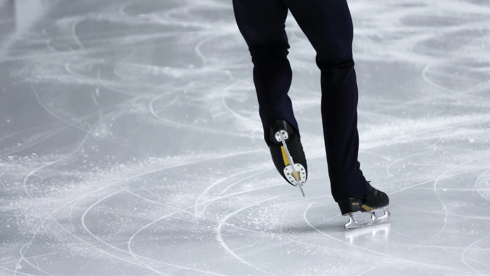

坂本花織、現役ラストダンスで世界一
——自己ベスト238.28点で
4度目の頂点、涙の有終の美

最終24番滑走として登場した坂本は、今季フリーのテーマ曲「愛の讃歌」に乗って4分間の演技を展開しました。冒頭のダブルアクセルをしっかり決めると、連続ジャンプも次々と成功。後半もペースが落ちることなく、ほぼノーミスの圧巻の滑りで会場を沸かせました。
フリーの得点は158.97点と今季世界最高かつ自己ベスト。ショートプログラム（SP）に続いてフリーでも1位となり、SPとの合計238.28点も自己最高点となりました。得点のアナウンスが流れると坂本は「キャーッ」と絶叫し、跳び上がって喜んだ後、再び大粒の涙を浮かべました。
🥇 坂本 花織（日本）── 238.28点（自己ベスト・今季世界最高）
🥈 千葉 百音（日本）── 228.47点（自己ベスト）
🥉 ニナ・ピンザロネ（ベルギー）── 215.20点
2位には千葉百音（20・木下グループ）が228.47点の自己ベストで入り、日本女子として19年ぶりとなる海外大会でのワンツーフィニッシュを達成しました。上位2人の順位合計が「3」となったことで、来年の世界選手権への最大3枠の出場権も獲得しています。
| 順位 | 選手 | SP | フリー | 合計 |
|---|---|---|---|---|
| 🥇 1位 | 坂本 花織（日本） | 79.31 | 158.97 ★自己ベスト | 238.28 |
| 🥈 2位 | 千葉 百音（日本） | 79.25 | 149.22 | 228.47 |
| 🥉 3位 | ニナ・ピンザロネ（ベルギー） | 72.42 | 142.78 | 215.20 |
今季限りの引退を表明し、2月のミラノ・コルティナ冬季五輪では個人・団体でともに銀メダルを獲得した坂本。五輪フリーでわずか1.89点差で金メダルを逃した悔しさを胸に、「世界選手権で自分が納得できる試合にしたい」と出場を決断していました。現役最後の舞台でその言葉通りの演技を見せた坂本は、キス・アンド・クライで涙と笑顔を交えながら「I am so happy. very very happy」と英語でコメント。会場からは鳴り止まない拍手が送られました。
世界選手権4度の頂点という金字塔を打ち立て、25年間のスケート人生に幕を下ろした坂本花織。引退後は指導者を目指すことを公言しており、恩師・中野園子コーチから受け取ったバトンを次世代へつなぐ新たな挑戦が始まります。